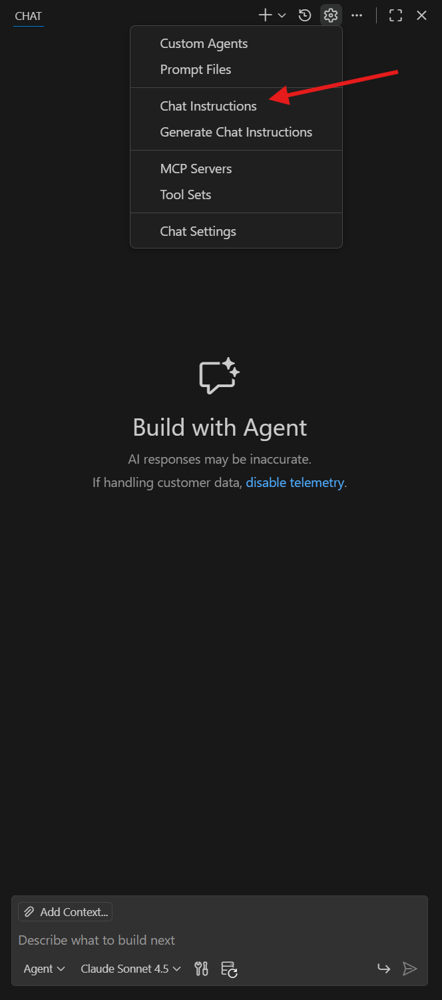
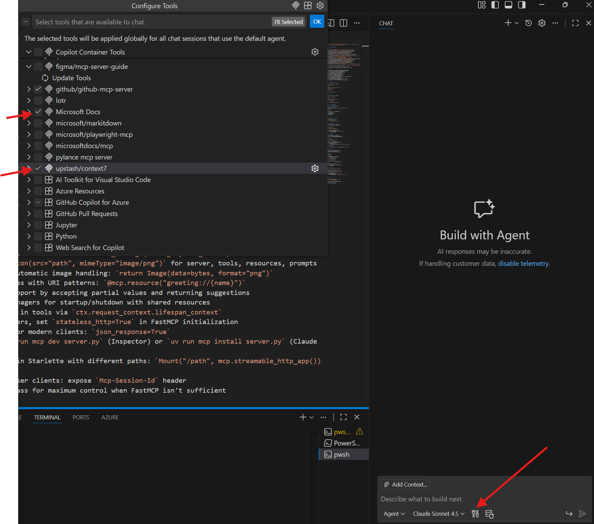
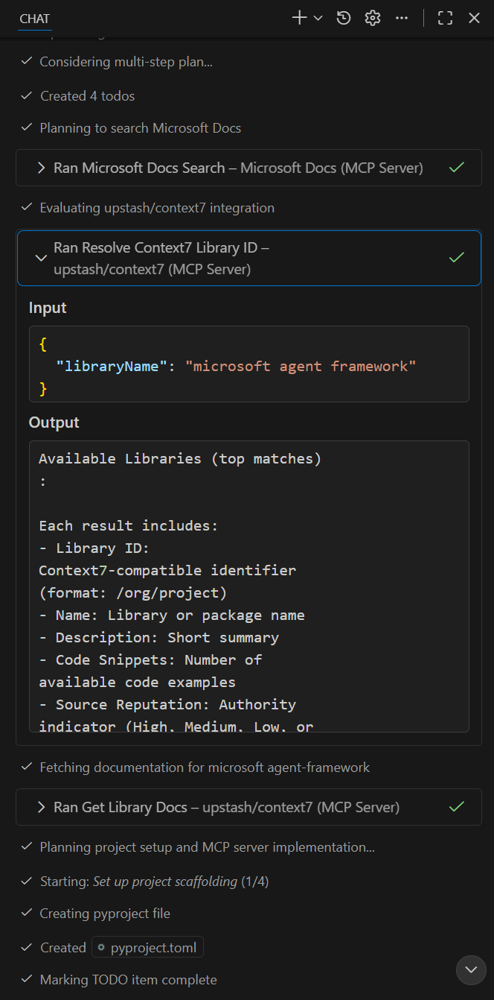

Building Multi-Agent Systems with MCP and External APIs¶
This customer case showcases how we leveraged GitHub Copilot end-to-end to build a proof-of-concept multi-agent application using the Agent Framework and Model Context Protocol (MCP). We demonstrate how GitHub Copilot can help developers rapidly explore new frameworks and build working prototypes without deep prior knowledge.
Lab Overview¶
Duration: 1-2 hours Difficulty: Advanced Prerequisites:
- Python programming knowledge
- Basic understanding of AI agents and LLMs
- Familiarity with REST APIs
- GitHub Copilot with MCP server support
Customer Challenge¶
The customer was interested in building a PoC app with multi-agent architecture using a new agentic orchestration framework, the Agent Framework. They also wanted to explore Model Context Protocol (MCP) to connect to their API endpoint. They did not know where to start.
Key Requirements¶
- Multi-agent architecture with agent-to-agent communication
- Integration with external APIs via custom MCP servers
- Use of Microsoft's Agent Framework (newly introduced)
- Rapid prototyping without deep framework knowledge
Challenges¶
- Newly introduced framework: The Agent Framework was recently released
- Limited LLM knowledge: Base models have no knowledge of this framework
- Understanding MCP integration: How to integrate MCP with the framework
- Multiple technology integration: Agent Framework, MCP servers, external APIs, and orchestration patterns
Solution Approach¶
This showcase demonstrates how to try out new libraries/frameworks while leveraging GitHub Copilot to build a working proof-of-concept quickly:
- Leverage MCP Servers inside GitHub Copilot:
- Microsoft Docs MCP server to provide Agent Framework documentation from Microsoft
- Context7 MCP to leverage code examples and patterns
- Start with a clear plan/requirements using Copilot's planner mode
- Create custom instructions focused on the desired implementation
Getting Started¶
Step 1: Custom Instructions¶
Before starting implementation, it's recommended to create custom instructions, agents, or prompts specific to your needs. In GitHub Copilot and VS Code, this can be done with chat modes and custom instructions:
Adding Custom MCP Instruction File¶
Take a look at this repository, which consists of various example instructions, prompts, and custom agents: Awesome GitHub Copilot Customizations.
We will use a custom instruction file from the Awesome GitHub Copilot Customizations repository. This example instruction file focuses on building MCP servers using Python. The file contains instructions, best practices, common patterns, and example code snippets.

Now, every time GitHub Copilot is editing/reading a *.py file, it will include our MCP instruction file in the context.
Step 2: Custom Agents - Planner¶
We will leverage the Plan Mode from GitHub Copilot as seen in the screenshot. Plan mode helps create, refine, and execute step-by-step implementation plans. Before starting to code, the plan mode analyzes your codebase, generates detailed execution plans, and validates that requirements are covered.

Copilot Tip
You can also create your own custom agent, tailored to your own requirements and ideas.
Step 3: Add MCP Servers¶
Right now our agent is limited to the model's knowledge. We need additional function calling capabilities (e.g., interacting with external tools and accessing up-to-date documentation).
We'll add MCP servers to our custom agent. You can leverage either:
- The internal marketplace of VS Code: MCP Servers Documentation
- The GitHub MCP Registry with one-click integration: GitHub MCP
Recommended MCP Servers¶
- Context7: Pulls up-to-date, version-specific documentation and code examples straight from the source
-
Microsoft Learn MCP: Provides access to Microsoft Learn documentation and tutorials, necessary when working with Microsoft libraries like Agent Framework
- Microsoft Learn MCP
After adding the MCP servers to VS Code, enable them by selecting Configure Tools and ticking the boxes:

Implementation¶
With the custom instruction and MCP servers in place, we can now start implementing our prototype.
Step 1: Planning with GitHub Copilot¶
We will first leverage the planner agent to help us with the implementation. Start a new chat with the planner agent and provide the following input. Be sure to have selected your custom agent from the dropdown in the chat window.
I need to build a multi-agent PoC using Microsoft's Agent Framework in Python. The requirements are:
**Architecture:**
- Two agents that communicate to complete a collaborative task
- Agent 1, the Poet: Accesses a custom MCP server to retrieve Lord of the Rings quotes from an API (https://the-one-api.dev/v2/quote), then writes a brief LOTR-themed poem
- Agent 2, the Critic: Reviews the poem for content accuracy, length, and LOTR lore compliance
**MCP Server Requirements:**
- Implement a custom MCP server that connects to The One API
- Handle Bearer token authentication: `Authorization: Bearer your-api-key-123`
- Expose tools for quote retrieval
**Workflow:**
- Agents should iterate in a "ping-pong" pattern with visible interaction logging
- Implement a configurable limit on iteration rounds (e.g., max 5 exchanges)
- User should see the full conversation flow
Please create a detailed implementation plan. I have access to #Microsoft Docs and #upstash/context7 MCP servers for up-to-date Agent Framework documentation and examples.
The planning should take a moment. After the plan is ready, you'll have a structured approach to building the multi-agent system.
Step 2: Implementation¶
Let's either change to Agent Mode or your custom implementer agent and provide the following input referencing the MCP servers we have:
Check the chat window to see what has been built:

GitHub Copilot should complete the implementation. You should start the prototype to verify that everything is working as expected. If you have problems starting the prototype, ask the agent for help to troubleshoot the issues!
Let's be realistic: There might be errors during implementation. If that is the case, leverage the agent to help you troubleshoot the issues. We suggest nudging the agent with the error messages you get to get help on how to fix them.
Step 3: Testing and Iteration¶
Once the implementation is complete:
- Verify the MCP server: Ensure it can connect to the external API and retrieve data
- Test agent communication: Verify the agents can communicate in the ping-pong pattern
- Check iteration limits: Confirm the conversation respects the maximum round configuration
- Review output quality: Ensure the poet creates relevant content and the critic provides meaningful feedback
Key Takeaways¶
This customer case demonstrates how GitHub Copilot with MCP servers can:
- Accelerate learning: Quickly understand new frameworks without deep documentation diving
- Provide up-to-date information: Access the latest framework documentation via MCP servers
- Generate working prototypes: Create functional multi-agent systems rapidly
- Integrate multiple technologies: Combine frameworks, APIs, and orchestration patterns seamlessly
- Enable experimentation: Try new approaches without extensive setup time
Architecture Benefits¶
- Custom MCP Servers: Extend agent capabilities with external data sources
- Multi-Agent Collaboration: Enable specialized agents to work together on complex tasks
- Flexible Orchestration: Control agent interactions with configurable patterns
- Visible Communication Flow: Track and debug agent-to-agent conversations
Next Steps¶
- Extend the pattern to more complex multi-agent scenarios
- Add additional MCP servers for different data sources
- Implement more sophisticated orchestration patterns
- Deploy the system to production environments
- Add monitoring and logging for agent interactions
Code Repository¶
The complete code for all three prototypes is available in this repository:
GitHub Repository: ghcp_session_stickiness_customer_case
Conclusion¶
This customer case shows that with GitHub Copilot and the right MCP servers, developers can:
- Rapidly prototype with unfamiliar frameworks
- Build complex multi-agent systems without extensive research
- Integrate external APIs seamlessly via custom MCP servers
- Create working solutions in hours instead of days
The combination of GitHub Copilot's code generation, MCP servers for up-to-date documentation, and the planner mode for structured implementation creates a powerful workflow for exploring new technologies.